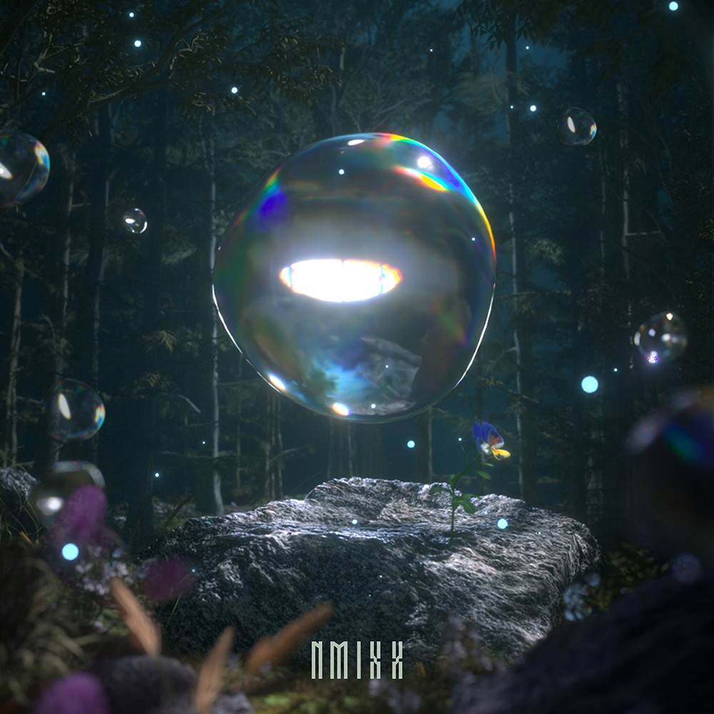
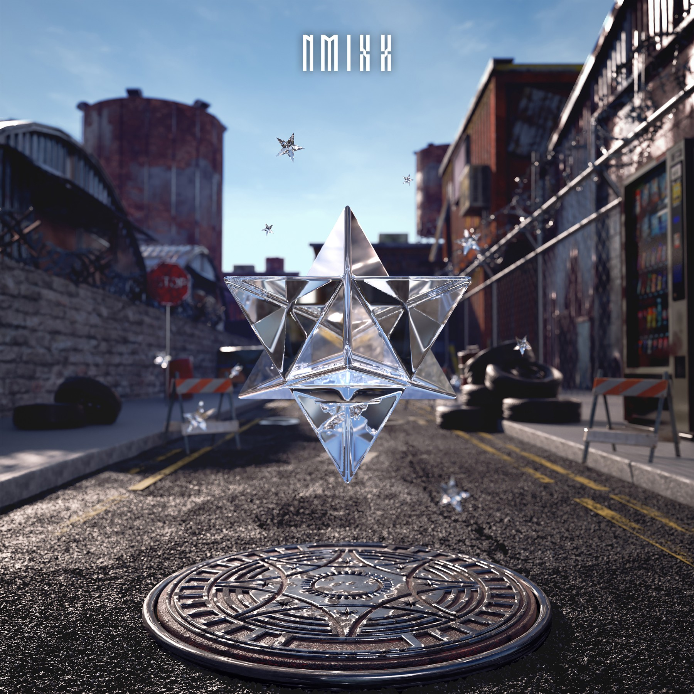
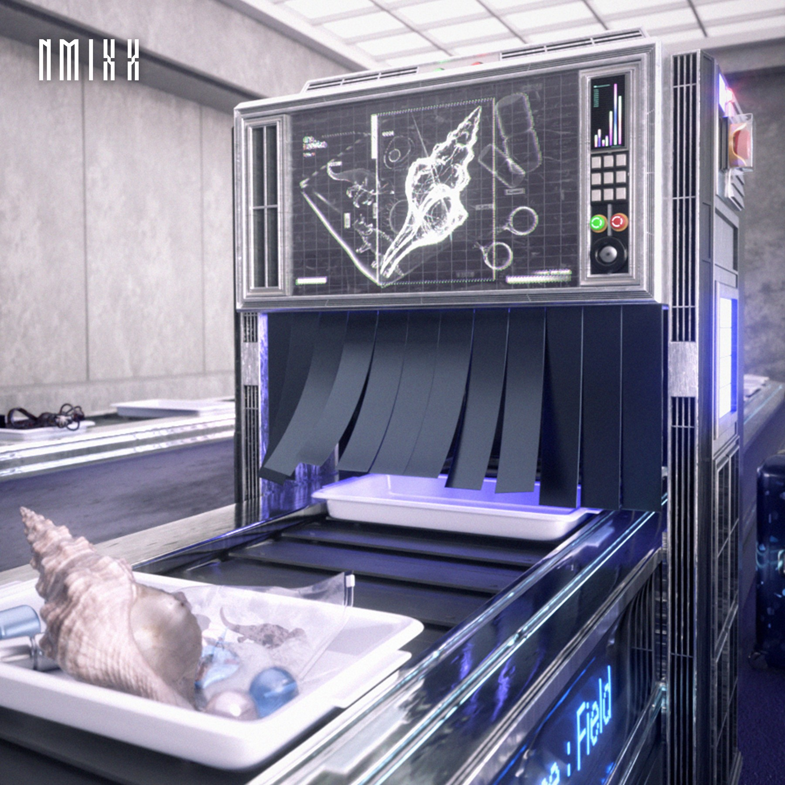

Hanteo初動記録
アルバムごとの初日売上と初動売上を発売順に掲載しています。
RELEASE ORDER
アルバム別記録
01
RELEASE 2022.02.22
AD MARE
1st Single / Title: O.O
- 初日売上
- 20,300枚
- 初動売上
- 227,399枚
02
RELEASE 2022.09.19
ENTWURF
2nd Single / Title: DICE
- 初日売上
- 250,661枚
- 初動売上
- 442,207枚
03

RELEASE 2023.03.20
expérgo
1st Mini Album / Title: Love Me Like This
- 初日売上
- 405,580枚
- 初動売上
- 630,811枚
04

RELEASE 2023.07.11
A Midsummer NMIXX's Dream
3rd Single / Title: Party O'Clock
- 初日売上
- 719,886枚
- 初動売上
- 1,030,541枚
05

RELEASE 2024.01.15
Fe3O4: BREAK
2nd Mini Album / Title: DASH
- 初日売上
- 127,908枚
- 初動売上
- 618,550枚
06

RELEASE 2024.08.19
Fe3O4: STICK OUT
3rd Mini Album / Title: 별별별 (See that?)
- 初日売上
- 341,362枚
- 初動売上
- 585,717枚
07

RELEASE 2025.03.17
Fe3O4: FORWARD
4th Mini Album / Title: KNOW ABOUT ME
- 初日売上
- 435,914枚
- 初動売上
- 702,876枚
08

RELEASE 2025.10.13
Blue Valentine
1st Full Album / Title: Blue Valentine
- 初日売上
- 468,587枚
- 初動売上
- 644,865枚